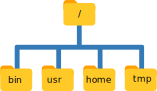
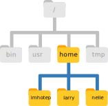

Basic commands
Overview
Teaching: min
Exercises: minQuestions
How can I move around on my computer?
How can I see what files and directories I have?
How can I specify the location of a file or directory on my computer?
How can I create, copy, and delete files and directories?
How can I edit files?
Objectives
Explain the similarities and differences between a file and a directory.
Translate an absolute path into a relative path and vice versa.
Construct absolute and relative paths that identify specific files and directories.
Demonstrate the use of tab completion, and explain its advantages.
Create a directory hierarchy that matches a given diagram.
Create files in that hierarchy using an editor or by copying and renaming existing files.
Delete, copy and move specified files and/or directories.
The part of the operating system responsible for managing files and directories is called the file system. It organizes our data into files, which hold information, and directories (also called “folders”), which hold files or other directories.
Several commands are frequently used to create, inspect, rename, and delete files and directories. To start exploring them, we’ll go to our open shell window.
First let’s find out where we are by running a command called pwd
(which stands for “print working directory”). Directories are like places - at any time
while we are using the shell we are in exactly one place, called
our current working directory. Commands mostly read and write files in the
current working directory, i.e. “here”, so knowing where you are before running
a command is important. pwd shows you where you are:
$ pwd
/home/participant
Here,
the computer’s response is /home/participant,
which is your home directory:
Home Directory Variation
The home directory path will look different on different operating systems. On Mac it may look like
/Users/participant, and on Windows it will be similar toC:\Documents and Settings\participantorC:\Users\participant. (Note that it may look slightly different for different versions of Windows.) In future examples, we’ve used Linux output as the default - Mac and Windows output may differ slightly, but should be generally similar.
To understand what a “home directory” is, let’s have a look at how the file system as a whole is organized. For the sake of this example, we’ll be illustrating the filesystem on a typical Linux computer. After this illustration, you’ll be learning commands to explore your own filesystem, which will be constructed in a similar way, but not be exactly identical.
On a typical Linux computer, the filesystem looks like this:

At the top is the root directory
that holds everything else.
We refer to it using a slash character, /, on its own;
this is the leading slash in /home/participant.
Inside that directory are several other directories:
bin (which is where some built-in programs are stored),
usr (for miscellaneous user files),
home (where users’ personal directories are located),
tmp (for temporary files that don’t need to be stored long-term),
and so on.
We know that our current working directory /home/participant is stored inside /home
because /home is the first part of its name.
Similarly,
we know that /home is stored inside the root directory /
because its name begins with /.
Slashes
Notice that there are two meanings for the
/character. When it appears at the front of a file or directory name, it refers to the root directory. When it appears inside a name, it’s just a separator.
Underneath /home,
we find one directory for each user with an account on the machine,
in this example imhotep and larry.

The user imhotep’s files are stored in /home/imhotep,
user larry’s in /home/larry,
and your’s in /home/participant. Because you are the current user in our
examples here, this is why we get /home/participant as our home directory.
Typically, when you open a new command prompt you will be in
your home directory to start.
Now let’s learn the command that will let us see the contents of our
own filesystem. We can see what’s in our home directory by running ls,
which stands for “listing”:
$ ls
Documents Downloads Music Public
Desktop Movies Pictures Templates
(Again, your results may be slightly different depending on your operating system and how you have customized your filesystem.)
ls prints the names of the files and directories in the current directory.
We can make its output more comprehensible by using the -F option
(also known as a switch or a flag) ,
which tells ls to classify the output
by adding a marker to file and directory names to indicate what they are:
- a trailing
/indicates that this is a directory @indicates a link*indicates an executable
Depending on your default options, the shell might also use colors to indicate whether each entry is a file or directory.
$ ls -F
Documents Downloads Music Public
Desktop Movies Pictures Templates
Here, we can see that our home directory contains mostly sub-directories. Any names in your output that don’t have a classification symbol, are plain old files.
General syntax of a shell command
Consider the command below as a general example of a command, which we will dissect into its component parts:
$ ls -F /
ls is the command, with an option -F and an
argument /.
We’ve already encountered options (also called switches or flags) which
either start with a single dash (-) or two dashes (--), and they change the behaviour of a command.
Arguments tell the command what to operate on (e.g. files and directories).
Sometimes options and arguments are referred to as parameters.
A command can be called with more than one option and more than one argument: but a
command doesn’t always require an argument or an option.
Each part is separated by spaces: if you omit the space
between ls and -F the shell will look for a command called ls-F, which
doesn’t exist. Also, capitalisation can be important: ls -r is different to ls -R.
Putting all that together, our command above gives us a listing
of files and directories in the root directory /.
An example of the output you might get from the above command is given below:
$ ls -F /
bin/ boot/ cdrom/ core dev/ etc/ home/ home2/ initrd.img@ initrd.img.old@ lib/ lib32/ lib64/ lost+found/ media/ mnt/ opt/ proc/ root/ run/ sbin/ snap/ srv/ sys/ tmp/ usr/ var/
Getting help
ls has lots of other options. There are two common ways to find out how
to use a command and what options it accepts:
- We can pass a
--helpoption to the command, such as:$ ls --help - We can read its manual with
man, such as:$ man ls
The --help option
Many bash commands, and programs that people have written that can be
run from within bash, support a --help option to display more
information on how to use the command or program.
$ ls --help
Usage: ls [OPTION]... [FILE]...
List information about the FILEs (the current directory by default).
Sort entries alphabetically if none of -cftuvSUX nor --sort is specified.
Mandatory arguments to long options are mandatory for short options too.
-a, --all do not ignore entries starting with .
-A, --almost-all do not list implied . and ..
--author with -l, print the author of each file
-b, --escape print C-style escapes for nongraphic characters
--block-size=SIZE scale sizes by SIZE before printing them; e.g.,
'--block-size=M' prints sizes in units of
1,048,576 bytes; see SIZE format below
-B, --ignore-backups do not list implied entries ending with ~
-c with -lt: sort by, and show, ctime (time of last
modification of file status information);
with -l: show ctime and sort by name;
otherwise: sort by ctime, newest first
-C list entries by columns
--color[=WHEN] colorize the output; WHEN can be 'always' (default
if omitted), 'auto', or 'never'; more info below
-d, --directory list directories themselves, not their contents
-D, --dired generate output designed for Emacs' dired mode
-f do not sort, enable -aU, disable -ls --color
-F, --classify append indicator (one of */=>@|) to entries
--file-type likewise, except do not append '*'
--format=WORD across -x, commas -m, horizontal -x, long -l,
single-column -1, verbose -l, vertical -C
--full-time like -l --time-style=full-iso
-g like -l, but do not list owner
--group-directories-first
group directories before files;
can be augmented with a --sort option, but any
use of --sort=none (-U) disables grouping
-G, --no-group in a long listing, don't print group names
-h, --human-readable with -l and/or -s, print human readable sizes
(e.g., 1K 234M 2G)
--si likewise, but use powers of 1000 not 1024
-H, --dereference-command-line
follow symbolic links listed on the command line
--dereference-command-line-symlink-to-dir
follow each command line symbolic link
that points to a directory
--hide=PATTERN do not list implied entries matching shell PATTERN
(overridden by -a or -A)
--indicator-style=WORD append indicator with style WORD to entry names:
none (default), slash (-p),
file-type (--file-type), classify (-F)
-i, --inode print the index number of each file
-I, --ignore=PATTERN do not list implied entries matching shell PATTERN
-k, --kibibytes default to 1024-byte blocks for disk usage
-l use a long listing format
-L, --dereference when showing file information for a symbolic
link, show information for the file the link
references rather than for the link itself
-m fill width with a comma separated list of entries
-n, --numeric-uid-gid like -l, but list numeric user and group IDs
-N, --literal print raw entry names (don't treat e.g. control
characters specially)
-o like -l, but do not list group information
-p, --indicator-style=slash
append / indicator to directories
-q, --hide-control-chars print ? instead of nongraphic characters
--show-control-chars show nongraphic characters as-is (the default,
unless program is 'ls' and output is a terminal)
-Q, --quote-name enclose entry names in double quotes
--quoting-style=WORD use quoting style WORD for entry names:
literal, locale, shell, shell-always,
shell-escape, shell-escape-always, c, escape
-r, --reverse reverse order while sorting
-R, --recursive list subdirectories recursively
-s, --size print the allocated size of each file, in blocks
-S sort by file size, largest first
--sort=WORD sort by WORD instead of name: none (-U), size (-S),
time (-t), version (-v), extension (-X)
--time=WORD with -l, show time as WORD instead of default
modification time: atime or access or use (-u);
ctime or status (-c); also use specified time
as sort key if --sort=time (newest first)
--time-style=STYLE with -l, show times using style STYLE:
full-iso, long-iso, iso, locale, or +FORMAT;
FORMAT is interpreted like in 'date'; if FORMAT
is FORMAT1<newline>FORMAT2, then FORMAT1 applies
to non-recent files and FORMAT2 to recent files;
if STYLE is prefixed with 'posix-', STYLE
takes effect only outside the POSIX locale
-t sort by modification time, newest first
-T, --tabsize=COLS assume tab stops at each COLS instead of 8
-u with -lt: sort by, and show, access time;
with -l: show access time and sort by name;
otherwise: sort by access time, newest first
-U do not sort; list entries in directory order
-v natural sort of (version) numbers within text
-w, --width=COLS set output width to COLS. 0 means no limit
-x list entries by lines instead of by columns
-X sort alphabetically by entry extension
-Z, --context print any security context of each file
-1 list one file per line. Avoid '\n' with -q or -b
--help display this help and exit
--version output version information and exit
The SIZE argument is an integer and optional unit (example: 10K is 10*1024).
Units are K,M,G,T,P,E,Z,Y (powers of 1024) or KB,MB,... (powers of 1000).
Using color to distinguish file types is disabled both by default and
with --color=never. With --color=auto, ls emits color codes only when
standard output is connected to a terminal. The LS_COLORS environment
variable can change the settings. Use the dircolors command to set it.
Exit status:
0 if OK,
1 if minor problems (e.g., cannot access subdirectory),
2 if serious trouble (e.g., cannot access command-line argument).
GNU coreutils online help: <http://www.gnu.org/software/coreutils/>
Full documentation at: <http://www.gnu.org/software/coreutils/ls>
or available locally via: info '(coreutils) ls invocation'
Unsupported command-line options
If you try to use an option (flag) that is not supported,
lsand other commands will usually print an error message similar to:$ ls -jls: invalid option -- 'j' Try 'ls --help' for more information.
The man command
The other way to learn about ls is to type
$ man ls
This will turn your terminal into a page with a description
of the ls command and its options and, if you’re lucky, some examples
of how to use it.
To navigate through the man pages,
you may use ↑ and ↓ to move line-by-line,
or try B and Spacebar to skip up and down by a full page.
To search for a character or word in the man pages,
use / followed by the character or word you are searching for.
Sometimes a search will result in multiple hits. If so, you can move between hits using N (for moving forward) and Shift+N (for moving backward).
To quit the man pages, press Q.
Manual pages on the web
Of course there is a third way to access help for commands: searching the internet via your web browser. When using internet search, including the phrase
unix man pagein your search query will help to find relevant results.GNU provides links to its manuals including the core GNU utilities, which covers many commands introduced within this lesson.
Exploring More
lsFlagsYou can also use two options at the same time. What does the command
lsdo when used with the-loption? What about if you use both the-land the-hoption?Some of its output is about properties that we do not cover in this lesson (such as file permissions and ownership), but the rest should be useful nevertheless.
Solution
The
-loption makeslsuse a long listing format, showing not only the file/directory names but also additional information such as the file size and the time of its last modification. If you use both the-hoption and the-loption, this makes the file size “human readable”, i.e. displaying something like5.3Kinstead of5369.
Listing Recursively and By Time
The command
ls -Rlists the contents of directories recursively, i.e., lists their sub-directories, sub-sub-directories, and so on at each level. The commandls -tlists things by time of last change, with most recently changed files or directories first. In what order doesls -R -tdisplay things? Hint:ls -luses a long listing format to view timestamps.Solution
The files/directories in each directory are sorted by time of last change.
As you may now see, using a bash shell is strongly dependent on the idea that your files are organized in a hierarchical file system. Organizing things hierarchically in this way helps us keep track of our work: it’s possible to put hundreds of files in our home directory, just as it’s possible to pile hundreds of printed papers on our desk, but it’s a self-defeating strategy.
The data-shell directory, containing the data that we will use in these sessions, is located on our Desktop directory in home.
We can look at its contents passing
a directory name as an argument to ls:
$ ls -F Desktop/data-shell
creatures/ molecules/ notes.txt solar.pdf
data/ north-pacific-gyre/ pizza.cfg writing/
We can also change our location to that directory, so we are no longer located in our home directory.
The command to change locations is cd followed by a
directory name to change our working directory.
cd stands for “change directory”,
which is a bit misleading:
the command doesn’t change the directory,
it changes the shell’s idea of what directory we are in.
Let’s say we want to move to the data directory we saw above. We can
use the following series of commands to get there:
$ cd Desktop
$ cd data-shell
$ cd data
These commands will move us from our home directory onto our Desktop, then into
the data-shell directory, then into the data directory. You will notice that cd doesn’t print anything. This is normal. Many shell commands will not output anything to the screen when successfully executed. But if we run pwd after it, we can see that we are now
in /home/participant/Desktop/data-shell/data.
If we run ls without arguments now,
it lists the contents of /home/participant/Desktop/data-shell/data,
because that’s where we now are:
$ pwd
/home/participant/Desktop/data-shell/data
$ ls -F
amino-acids.txt elements/ pdb/ salmon.txt
animals.txt morse.txt planets.txt sunspot.txt
We now know how to go down the directory tree, but how do we go up? We might try the following:
$ cd data-shell
-bash: cd: data-shell: No such file or directory
But we get an error! Why is this?
With our methods so far,
cd can only see sub-directories inside your current directory. There are
different ways to see directories above your current location; we’ll start
with the simplest.
There is a shortcut in the shell to move up one directory level that looks like this:
$ cd ..
.. is a special directory name meaning
“the directory containing this one”,
or more succinctly,
the parent of the current directory.
Sure enough,
if we run pwd after running cd .., we’re back in /home/nelle/Desktop/data-shell:
$ pwd
/home/participant/Desktop/data-shell
The special directory .. doesn’t usually show up when we run ls. If we want
to display it, we can give ls the -a option:
$ ls -F -a
./ .bash_profile data/ north-pacific-gyre/ pizza.cfg thesis/
../ creatures/ molecules/ notes.txt solar.pdf writing/
-a stands for “show all”;
it forces ls to show us file and directory names that begin with .,
such as .. (which, if we’re in /home/participant, refers to the /home directory)
As you can see,
it also displays another special directory that’s just called .,
which means “the current working directory”.
It may seem redundant to have a name for it,
but we’ll see some uses for it soon.
Note that in most command line tools, multiple options can be combined
with a single - and no spaces between the options: ls -F -a is
equivalent to ls -Fa.
Other Hidden Files
In addition to the hidden directories
..and., you may also see a file called.bashrc. This file usually contains shell configuration settings. You may also see other files and directories beginning with.. These are usually files and directories that are used to configure different programs on your computer. The prefix.is used to prevent these configuration files from cluttering the terminal when a standardlscommand is used.
These then, are the basic commands for navigating the filesystem on your computer:
pwd, ls and cd. Let’s explore some variations on those commands.
Let’s try returning to the data directory from before. Last time, we used
three commands, but we can actually string together the list of directories
to move to data in one step:
$ cd Desktop/data-shell/data
Check that we’ve moved to the right place by running pwd and ls -F
If we want to move up one level from the data directory, we could use cd ... But
there is another way to move to any directory, regardless of your
current location.
So far, when specifying directory names, or even a directory path (as above),
we have been using relative paths. When you use a relative path with a command
like ls or cd, it tries to find that location from where we are,
rather than from the root of the file system.
However, it is possible to specify the absolute path to a directory by
including its entire path from the root directory, which is indicated by a
leading slash. The leading / tells the computer to follow the path from
the root of the file system, so it always refers to exactly one directory,
no matter where we are when we run the command.
This allows us to move to our data-shell directory from anywhere on
the filesystem (including from inside data). To find the absolute path
we’re looking for, we can use pwd and then extract the piece we need
to move to data-shell.
$ pwd
/home/participant/Desktop/data-shell/data
$ cd /home/participant/Desktop/data-shell
Run pwd and ls -F to ensure that we’re in the directory we expect.
Another Shortcut
The shell interprets the character
~(tilde) at the start of a path to mean “the current user’s home directory”. For example, for your home directory ,/home/participant, then~/datais equivalent to/home/participant/data. This only works if it is the first character in the path:here/there/~/elsewhereis nothere/there/home/participant/elsewhere.
Tab completion
Sometimes file and directory names get too long and it’s tedious to have to type the full name for example when moving with
cd. We can let the shell do most of the work > through what is called tab completion. Let’s say we are in the/home/participant/Desktop/data-shell/and we type:$ ls norand then press Tab (the tab key on the keyboard), the shell automatically completes the directory name:
$ ls north-pacific-gyre/If we press Tab again, Bash will add
2012-07-03/to the command, since it’s the only possible completion. Pressing Tab again does nothing, since there are 19 possibilities; pressing Tab twice brings up a list of all the files, and so on. This is very useful in practise and we will see more of it later.
Absolute vs Relative Paths
Starting from
/home/amanda/data, which of the following commands could Amanda use to navigate to her home directory, which is/home/amanda?
cd .cd /cd /home/amandacd ../..cd ~cd homecd ~/data/..cdcd ..Solution
- No:
.stands for the current directory.- No:
/stands for the root directory.- No: Amanda’s home directory is
/home/amanda.- No: this goes up two levels, i.e. ends in
/home.- Yes:
~stands for the user’s home directory, in this case/home/amanda.- No: this would navigate into a directory
homein the current directory if it exists.- Yes: unnecessarily complicated, but correct.
- Yes: shortcut to go back to the user’s home directory.
- Yes: goes up one level.
Relative Path Resolution
Using the filesystem diagram below, if
pwddisplays/Users/thing, what willls -F ../backupdisplay?
../backup: No such file or directory2012-12-01 2013-01-08 2013-01-272012-12-01/ 2013-01-08/ 2013-01-27/original/ pnas_final/ pnas_sub/
Solution
- No: there is a directory
backupin/Users.- No: this is the content of
Users/thing/backup, but with..we asked for one level further up.- No: see previous explanation.
- Yes:
../backup/refers to/Users/backup/.

lsReading ComprehensionUsing the filesystem diagram below, if
pwddisplays/Users/backup, and-rtellslsto display things in reverse order, what command(s) will result in the following output:pnas_sub/ pnas_final/ original/
ls pwdls -r -Fls -r -F /Users/backupSolution
- No:
pwdis not the name of a directory.- Yes:
lswithout directory argument lists files and directories in the current directory.- Yes: uses the absolute path explicitly.
Creating directories
We now know how to explore files and directories, but how do we create them in the first place?
Step one: see where we are and what we already have
Let’s go back to our data-shell directory on the Desktop
and use ls -F to see what it contains:
$ pwd
/home/participant/Desktop/data-shell
$ ls -F
creatures/ data/ molecules/ north-pacific-gyre/ notes.txt pizza.cfg solar.pdf writing/
Create a directory
Let’s create a new directory called thesis using the command mkdir thesis
(which has no output):
$ mkdir thesis
As you might guess from its name,
mkdir means “make directory”.
Since thesis is a relative path
(i.e., does not have a leading slash, like /what/ever/thesis),
the new directory is created in the current working directory:
$ ls -F
creatures/ data/ molecules/ north-pacific-gyre/ notes.txt pizza.cfg solar.pdf thesis/ writing/
Two ways of doing the same thing
Using the shell to create a directory is no different than using a file explorer. If you open the current directory using your operating system’s graphical file explorer, the
thesisdirectory will appear there too. While the shell and the file explorer are two different ways of interacting with the files, the files and directories themselves are the same.
Good names for files and directories
Complicated names of files and directories can make your life painful when working on the command line. Here we provide a few useful tips for the names of your files.
Don’t use spaces.
Spaces can make a name more meaningful, but since spaces are used to separate arguments on the command line it is better to avoid them in names of files and directories. You can use
-or_instead (e.g.north-pacific-gyre/rather thannorth pacific gyre/).Don’t begin the name with
-(dash).Commands treat names starting with
-as options.Stick with letters, numbers,
.(period or ‘full stop’),-(dash) and_(underscore).Many other characters have special meanings on the command line. We will learn about some of these during this lesson. There are special characters that can cause your command to not work as expected and can even result in data loss.
If you need to refer to names of files or directories that have spaces or other special characters, you should surround the name in quotes (
"").
Since we’ve just created the thesis directory, there’s nothing in it yet:
$ ls -F thesis
Create a text file
Let’s change our working directory to thesis using cd,
then run a text editor called Nano to create a file called draft.txt:
$ cd thesis
$ nano draft.txt
Which Editor?
When we say, “
nanois a text editor,” we really do mean “text”: it can only work with plain character data, not tables, images, or any other human-friendly media. We use it in examples because it is one of the least complex text editors. However, because of this trait, it may not be powerful enough or flexible enough for the work you need to do after this workshop. On Unix systems (such as Linux and Mac OS X), many programmers use Emacs or Vim (both of which require more time to learn), or a graphical editor such as Gedit. On Windows, you may wish to use Notepad++. Windows also has a built-in editor callednotepadthat can be run from the command line in the same way asnanofor the purposes of this lesson.No matter what editor you use, you will need to know where it searches for and saves files. If you start it from the shell, it will (probably) use your current working directory as its default location. If you use your computer’s start menu, it may want to save files in your desktop or documents directory instead. You can change this by navigating to another directory the first time you “Save As…”
Let’s type in a few lines of text.
Once we’re happy with our text, we can press Ctrl+O (press the Ctrl or Control key and, while
holding it down, press the O key) to write our data to disk
(we’ll be asked what file we want to save this to:
press Return to accept the suggested default of draft.txt).

Once our file is saved, we can use Ctrl-X to quit the editor and
return to the shell.
Control, Ctrl, or ^ Key
The Control key is also called the “Ctrl” key. There are various ways in which using the Control key may be described. For example, you may see an instruction to press the Control key and, while holding it down, press the X key, described as any of:
Control-XControl+XCtrl-XCtrl+X^XC-xIn nano, along the bottom of the screen you’ll see
^G Get Help ^O WriteOut. This means that you can useControl-Gto get help andControl-Oto save your file.
nano doesn’t leave any output on the screen after it exits,
but ls now shows that we have created a file called draft.txt:
$ ls
draft.txt
Creating Files a Different Way
We have seen how to create text files using the
nanoeditor. Now, try the following command:$ touch my_file.txt
What did the
touchcommand do? When you look at your current directory using the GUI file explorer, does the file show up?Use
ls -lto inspect the files. How large ismy_file.txt?When might you want to create a file this way?
Solution
The
touchcommand generates a new file calledmy_file.txtin your current directory. You can observe this newly generated file by typinglsat the command line prompt.my_file.txtcan also be viewed in your GUI file explorer.When you inspect the file with
ls -l, note that the size ofmy_file.txtis 0 bytes. In other words, it contains no data. If you openmy_file.txtusing your text editor it is blank.Some programs do not generate output files themselves, but instead require that empty files have already been generated. When the program is run, it searches for an existing file to populate with its output. The touch command allows you to efficiently generate a blank text file to be used by such programs.
What’s In A Name?
You may have noticed that all of Nelle’s files are named “something dot something”, and in this part of the lesson, we always used the extension
.txt. This is just a convention: we can call a filemythesisor almost anything else we want. However, most people use two-part names most of the time to help them (and their programs) tell different kinds of files apart. The second part of such a name is called the filename extension, and indicates what type of data the file holds:.txtsignals a plain text file,.cfgis a configuration file full of parameters for some program or other,.pngis a PNG image, and so on.This is just a convention, albeit an important one. Files contain bytes: it’s up to us and our programs to interpret those bytes according to the rules for plain text files, PDF documents, configuration files, images, and so on.
Naming a PNG image of a whale as
whale.mp3doesn’t somehow magically turn it into a recording of whalesong, though it might cause the operating system to try to open it with a music player when someone double-clicks it.
Moving files and directories
Returning to the data-shell directory,
cd ~/Desktop/data-shell/
In our thesis directory we have a file draft.txt
which isn’t a particularly informative name,
so let’s change the file’s name using mv,
which is short for “move”:
$ mv thesis/draft.txt thesis/quotes.txt
The first argument tells mv what we’re “moving”,
while the second is where it’s to go.
In this case,
we’re moving thesis/draft.txt to thesis/quotes.txt,
which has the same effect as renaming the file.
Sure enough,
ls shows us that thesis now contains one file called quotes.txt:
$ ls thesis
quotes.txt
One has to be careful when specifying the target file name, since mv will
silently overwrite any existing file with the same name, which could
lead to data loss. An additional option, mv -i (or mv --interactive),
can be used to make mv ask you for confirmation before overwriting.
Note that mv also works on directories.
Let’s move quotes.txt into the current working directory.
We use mv once again,
but this time we’ll just use the name of a directory as the second argument
to tell mv that we want to keep the filename,
but put the file somewhere new.
(This is why the command is called “move”.)
In this case,
the directory name we use is the special directory name . that we mentioned earlier.
$ mv thesis/quotes.txt .
The effect is to move the file from the directory it was in to the current working directory.
ls now shows us that thesis is empty:
$ ls thesis
Further,
ls with a filename or directory name as an argument only lists that file or directory.
We can use this to see that quotes.txt is still in our current directory:
$ ls quotes.txt
quotes.txt
Copying files and directories
The cp command works very much like mv,
except it copies a file instead of moving it.
We can check that it did the right thing using ls
with two paths as arguments — like most Unix commands,
ls can be given multiple paths at once:
$ cp quotes.txt thesis/quotations.txt
$ ls quotes.txt thesis/quotations.txt
quotes.txt thesis/quotations.txt
We can also copy a directory and all its contents by using the
recursive option -r,
e.g. to back up a directory:
$ cp -r thesis thesis_backup
We can check the result by listing the contents of both the thesis and thesis_backup directory:
$ ls thesis thesis_backup
thesis:
quotations.txt
thesis_backup:
quotations.txt
Renaming Files
Suppose that you created a plain-text file in your current directory to contain a list of the statistical tests you will need to do to analyze your data, and named it:
statstics.txtAfter creating and saving this file you realize you misspelled the filename! You want to correct the mistake, which command could you use to do so?
cp statstics.txt statistics.txtmv statstics.txt statistics.txtmv statstics.txt .cp statstics.txt .Solution
- No. While this would create a file with the correct name, the incorrectly named file still exists in the directory and would need to be deleted.
- Yes, this would work to rename the file.
- No, the period(.) indicates where to move the file, but does not provide a new file name; identical file names cannot be created.
- No, the period(.) indicates where to copy the file, but does not provide a new file name; identical file names cannot be created.
Moving and Copying
What is the output of the closing
lscommand in the sequence shown below? You can try the commands starting from/home/participant/Desktop/data-shell/protein-data.$ pwd/home/participant/Desktop/data-shell/protein-data$ lsproteins.dat$ mkdir recombine $ mv proteins.dat recombine/ $ cp recombine/proteins.dat ../proteins-saved.dat $ ls
proteins-saved.dat recombinerecombineproteins.dat recombineproteins-saved.datSolution
We start in the
/home/participant/protein-datadirectory, and create a new folder calledrecombine. The second line moves (mv) the fileproteins.datto the new folder (recombine). The third line makes a copy of the file we just moved. The tricky part here is where the file was copied to. Recall that..means “go up a level”, so the copied file is now in/home/participant/Desktop/data-shell. Notice that..is interpreted with respect to the current working directory, not with respect to the location of the file being copied. So, the only thing that will show using ls (in/home/participant/Desktop/data-shell/protein-data) is the recombine folder.
- No, see explanation above.
proteins-saved.datis located at/home/participant/Desktop/data-shell- Yes
- No, see explanation above.
proteins.datis located at/home/participant/Desktop/data-shell/protein-data/recombine- No, see explanation above.
proteins-saved.datis located at/home/participant/Desktop/data-shell
Removing files and directories
Returning to the data-shell directory,
let’s tidy up this directory by removing the quotes.txt file we created.
The Unix command we’ll use for this is rm (short for ‘remove’):
$ rm quotes.txt
We can confirm the file has gone using ls:
$ ls quotes.txt
ls: cannot access 'quotes.txt': No such file or directory
Deleting Is Forever
The Unix shell doesn’t have a trash bin that we can recover deleted files from (though most graphical interfaces to Unix do). Instead, when we delete files, they are unlinked from the file system so that their storage space on disk can be recycled. Tools for finding and recovering deleted files do exist, but there’s no guarantee they’ll work in any particular situation, since the computer may recycle the file’s disk space right away.
Using
rmSafelyWhat happens when we execute
rm -i thesis_backup/quotations.txt? Why would we want this protection when usingrm?Solution
$ rm: remove regular file 'thesis_backup/quotations.txt'? yThe
-ioption will prompt before (every) removal (use Y to confirm deletion or N to keep the file). The Unix shell doesn’t have a trash bin, so all the files removed will disappear forever. By using the-ioption, we have the chance to check that we are deleting only the files that we want to remove.
If we try to remove the thesis directory using rm thesis,
we get an error message:
$ rm thesis
rm: cannot remove `thesis': Is a directory
This happens because rm by default only works on files, not directories.
rm can remove a directory and all its contents if we use the
recursive option -r, and it will do so without any confirmation prompts:
$ rm -r thesis
Given that there is no way to retrieve files deleted using the shell,
rm -r should be used with great caution (you might consider adding the interactive option rm -r -i).
Operations with multiple files and directories
Oftentimes one needs to copy or move several files at once. This can be done by providing a list of individual filenames, or specifying a naming pattern using wildcards.
Copy with Multiple Filenames
For this exercise, you can test the commands in the
data-shell/datadirectory.In the example below, what does
cpdo when given several filenames and a directory name?$ mkdir backup $ cp amino-acids.txt animals.txt backup/In the example below, what does
cpdo when given three or more file names?$ ls -Famino-acids.txt animals.txt backup/ elements/ morse.txt pdb/ planets.txt salmon.txt sunspot.txt$ cp amino-acids.txt animals.txt morse.txtSolution
If given more than one file name followed by a directory name (i.e. the destination directory must be the last argument),
cpcopies the files to the named directory.If given three file names,
cpthrows an error such as the one below, because it is expecting a directory name as the last argument.cp: target ‘morse.txt’ is not a directory
Using wildcards for accessing multiple files at once
Wildcards
*is a wildcard, which matches zero or more characters. Let’s consider thedata-shell/moleculesdirectory:*.pdbmatchesethane.pdb,propane.pdb, and every file that ends with ‘.pdb’. On the other hand,p*.pdbonly matchespentane.pdbandpropane.pdb, because the ‘p’ at the front only matches filenames that begin with the letter ‘p’.
?is also a wildcard, but it matches exactly one character. So?ethane.pdbwould matchmethane.pdbwhereas*ethane.pdbmatches bothethane.pdb, andmethane.pdb.Wildcards can be used in combination with each other e.g.
???ane.pdbmatches three characters followed byane.pdb, givingcubane.pdb ethane.pdb octane.pdb.When the shell sees a wildcard, it expands the wildcard to create a list of matching filenames before running the command that was asked for. As an exception, if a wildcard expression does not match any file, Bash will pass the expression as an argument to the command as it is. For example typing
ls *.pdfin themoleculesdirectory (which contains only files with names ending with.pdb) results in an error message that there is no file calledwcandlssee the lists of file names matching these expressions, but not the wildcards themselves. It is the shell, not the other programs, that deals with expanding wildcards, and this is another example of orthogonal design.
List filenames matching a pattern
When run in the
moleculesdirectory, whichlscommand(s) will produce this output?
ethane.pdb methane.pdb
ls *t*ane.pdbls *t?ne.*ls *t??ne.pdbls ethane.*Solution
The solution is
3.
1.shows all files whose names contain zero or more characters (*) followed by the lettert, then zero or more characters (*) followed byane.pdb. This givesethane.pdb methane.pdb octane.pdb pentane.pdb.
2.shows all files whose names start with zero or more characters (*) followed by the lettert, then a single character (?), thenne.followed by zero or more characters (*). This will give usoctane.pdbandpentane.pdbbut doesn’t match anything which ends inthane.pdb.
3.fixes the problems of option 2 by matching two characters (??) betweentandne. This is the solution.
4.only shows files starting withethane..
More on Wildcards
Look into the
expdirectory in~/Desktop/data-shell/data/expthat has the following structure:exp ├── 2015-10-23-calibration.txt ├── 2015-10-23-dataset1.txt ├── 2015-10-23-dataset2.txt ├── 2015-10-23-dataset_overview.txt ├── 2015-10-26-calibration.txt ├── 2015-10-26-dataset1.txt ├── 2015-10-26-dataset2.txt ├── 2015-10-26-dataset_overview.txt ├── 2015-11-23-calibration.txt ├── 2015-11-23-dataset1.txt ├── 2015-11-23-dataset2.txt ├── 2015-11-23-dataset_overview.txt ├── backup │ ├── calibration │ └── datasets └── send_to_bob ├── all_datasets_created_on_a_23rd └── all_november_filesSuppose you want to:
- backup all dataset file to the
backup/datasetsand all calibration files tobackup/calibration- copy all the dataset files created on the 23rd to
send_to_bob/all_datasets_created_on_a_23rdand all November files (calibration) and dataset) tosend_to_bob/all_november_filesso you can send to a colleague.Which commands would you use to do that?
The resulting directory structure should look like this
exp ├── 2015-10-23-calibration.txt ├── 2015-10-23-dataset1.txt ├── 2015-10-23-dataset2.txt ├── 2015-10-23-dataset_overview.txt ├── 2015-10-26-calibration.txt ├── 2015-10-26-dataset1.txt ├── 2015-10-26-dataset2.txt ├── 2015-10-26-dataset_overview.txt ├── 2015-11-23-calibration.txt ├── 2015-11-23-dataset1.txt ├── 2015-11-23-dataset2.txt ├── 2015-11-23-dataset_overview.txt ├── backup │ ├── calibration │ │ ├── 2015-10-23-calibration.txt │ │ ├── 2015-10-26-calibration.txt │ │ └── 2015-11-23-calibration.txt │ └── datasets │ ├── 2015-10-23-dataset1.txt │ ├── 2015-10-23-dataset2.txt │ ├── 2015-10-23-dataset_overview.txt │ ├── 2015-10-26-dataset1.txt │ ├── 2015-10-26-dataset2.txt │ ├── 2015-10-26-dataset_overview.txt │ ├── 2015-11-23-dataset1.txt │ ├── 2015-11-23-dataset2.txt │ └── 2015-11-23-dataset_overview.txt └── send_to_bob ├── all_datasets_created_on_a_23rd │ ├── 2015-10-23-dataset1.txt │ ├── 2015-10-23-dataset2.txt │ ├── 2015-10-23-dataset_overview.txt │ ├── 2015-11-23-dataset1.txt │ ├── 2015-11-23-dataset2.txt │ └── 2015-11-23-dataset_overview.txt └── all_november_files ├── 2015-11-23-calibration.txt ├── 2015-11-23-dataset1.txt ├── 2015-11-23-dataset2.txt └── 2015-11-23-dataset_overview.txtSolution
$ cp *calibration.txt backup/calibration $ cp 2015-11-* send_to_bob/all_november_files/ $ cp *-23-dataset* send_to_bob/all_datasets_created_on_a_23rd/
Reproduce a folder structure
You’re starting a new experiment, and would like to duplicate the directory structure from your previous experiment so you can add new data.
Assume that the previous experiment is in a folder called ‘2016-05-18’, which contains a
datafolder that in turn contains folders namedrawandprocessedthat contain data files. The goal is to copy the folder structure of the2016-05-18-datafolder into a folder called2016-05-20so that your final directory structure looks like this:2016-05-20/ └── data ├── processed └── rawWhich of the following set of commands would achieve this objective? What would the other commands do? Try them out in the
data-shelldirectory.$ mkdir 2016-05-20 $ mkdir 2016-05-20/data $ mkdir 2016-05-20/data/processed $ mkdir 2016-05-20/data/raw$ mkdir 2016-05-20 $ cd 2016-05-20 $ mkdir data $ cd data $ mkdir raw processed$ mkdir 2016-05-20/data/raw $ mkdir 2016-05-20/data/processed$ mkdir 2016-05-20 $ cd 2016-05-20 $ mkdir data $ mkdir raw processedSolution
The first two sets of commands achieve this objective. The first set uses relative paths to create the top level directory before the subdirectories.
The third set of commands will give an error because
mkdirwon’t create a subdirectory of a non-existant directory: the intermediate level folders must be created first.The final set of commands generates the ‘raw’ and ‘processed’ directories at the same level as the ‘data’ directory.
Key Points
The file system is responsible for managing information on the disk.
Information is stored in files, which are stored in directories (folders).
Directories can also store other directories, which forms a directory tree.
cd pathchanges the current working directory.
ls pathprints a listing of a specific file or directory;lson its own lists the current working directory.
pwdprints the user’s current working directory.
/on its own is the root directory of the whole file system.A relative path specifies a location starting from the current location.
An absolute path specifies a location from the root of the file system.
Directory names in a path are separated with
/on Unix, but\on Windows.
..means ‘the directory above the current one’;.on its own means ‘the current directory’.
cp old newcopies a file.
mkdir pathcreates a new directory.
mv old newmoves (renames) a file or directory.
rm pathremoves (deletes) a file.
*matches zero or more characters in a filename, so*.txtmatches all files ending in.txt.
?matches any single character in a filename, so?.txtmatchesa.txtbut notany.txt.The shell does not have a trash bin: once something is deleted, it’s really gone.
Most files’ names are
something.extension. The extension isn’t required, and doesn’t guarantee anything, but is normally used to indicate the type of data in the file.